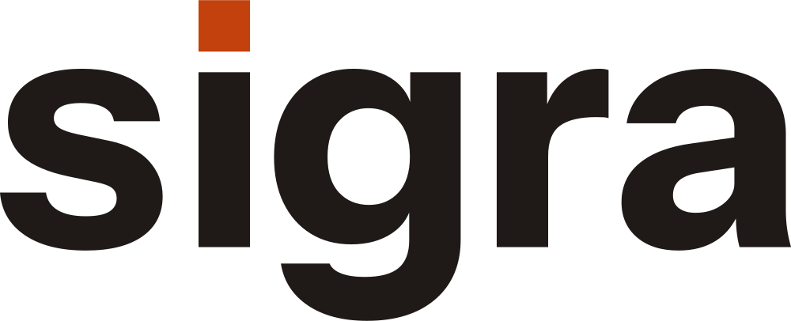
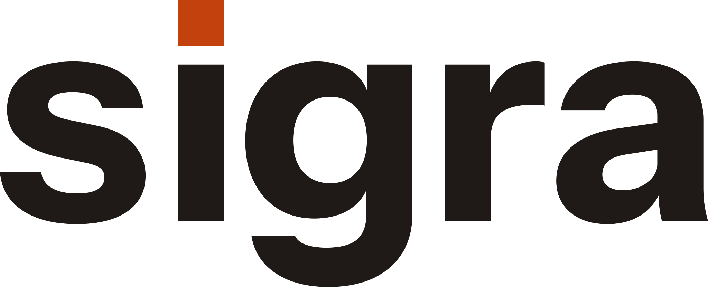
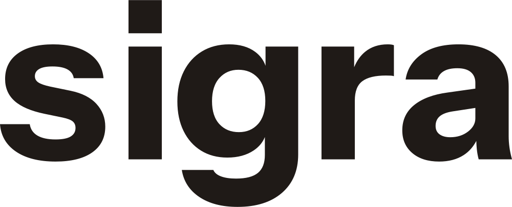
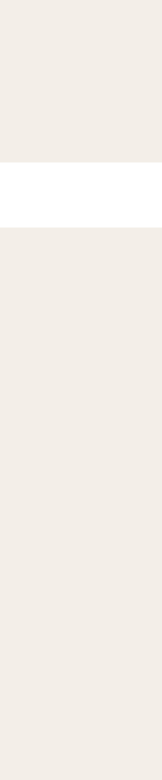
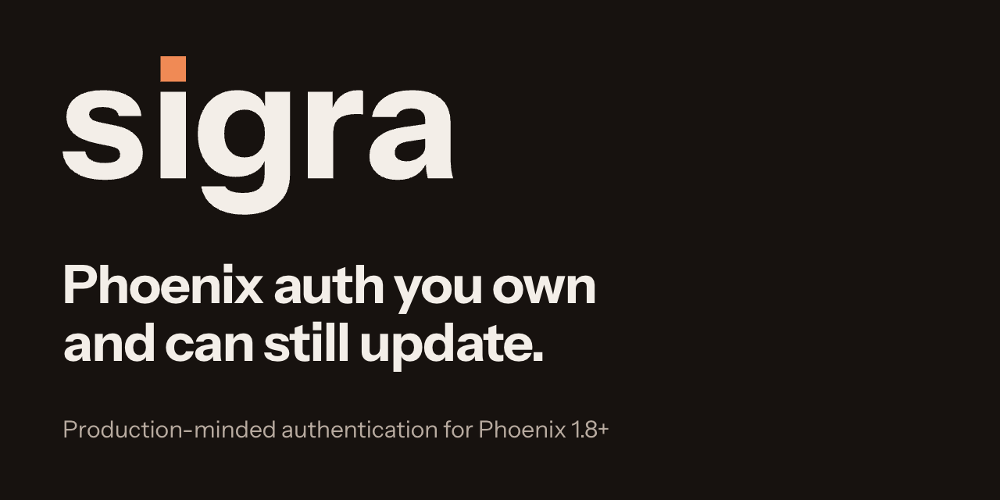

sigra assets
Which file to use, version 2.0 (November 13, 2026). Logo files are flat vector art in the exact brand colors with a transparent background: light files are drawn for a light page, dark files for a dark one, and mono files are one-color drawings (ink or bone). There is no shape behind any logo except the 512 px avatar, which social sites need as an opaque square. The favicon follows the device theme by itself.
Logo on a light background





Logo on a dark background





One color: print and single-color jobs







Favicon (the symbol, drawn for 16 and 32 px)


Avatar (a 512 px square, the one logo with a plate)


README header


Link preview and social card
